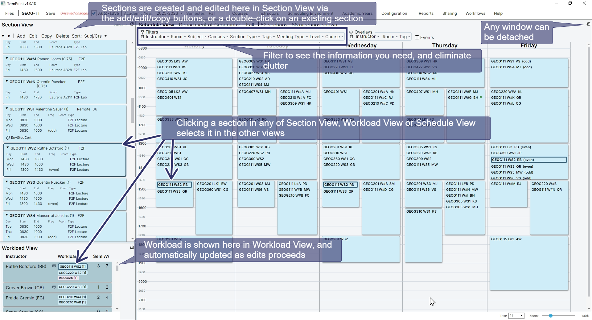
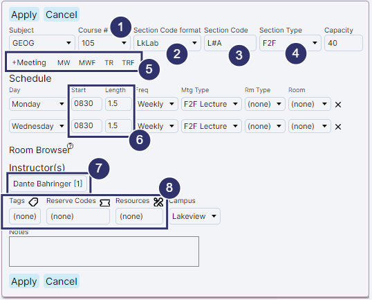

Navigating TermPoint and Editing Basics
The annotated screenshot below identifies the major areas of the TermPoint interface.

Creating and editing a section

-
Specify a subject and course number
-
Pick a section code format (These are defined under Configuration and greatly speed up editing)
-
The section code is automatically supplied (but can be overridden if necessary)
-
Optionally, pick a section type
-
Either add meetings with +Meeting, or choose a block pattern (defined under Configuration)
-
Set scheduling details for the meetings. The available block lengths are determined by the start times (as defined under Configuration). You can override if necessary.
-
Optionally, choose an instructor and associated workload. Workload View will be automatically updated
-
Optionally, choose tags, reserve codes and resources (all configurable under Scheduling Environment)
-
Click 'Apply' to register the edits. Don't forget to periodically save your edits (or use Autosave).